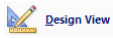

F I Ş A Nr. 4
Crearea unei interogări
Avem două tabele: ANGAJATI şi COPII. Cele două tabele sunt relaţionate: unei linii din tabela ANGAJATI îi corespunde mai multe linii din tabela COPII. Se poate observa în tabelul ANGAJATI că pentru Ionescu avem două înregistrări în tabela COPII
 |
Una dintre cele mai puternice operaţii în
Din ribbon-ulCreate alegeţi |

Observăm că este evidenţiată şi relaţia dintre cele două tabele. În acest moment putem să vedem orice fel de informaţie stocată în aceste tabele.
 |
Facem dublu-click pe
coloana |
Apăsăm Run, din ribbon-ul contextual Design > Result.
 |
Se vor afişa înregistrările găsite: Observăm că informaţiile despre Ionescu se repetă, pentru că el are doi copii. Ne întoarcem în Design View.  |
 |
Ce este interesant, şi aici vedem cu adevărat puterea interogărilor, este că vom putea să stabilim orice condiţii logice dorim, vom putea să filtrăm tabelele din Access stabilind nişte condiţii logice. |
De exemplu, la angajaţi nu vrem decât acei angajaţi care au un salariu mai mare de
2000. În linia Criteria, corespunzătoare coloanei
 |
Apăsăm din nou Run |
 |
Ne întoarcem în modul |
 şi observăm că
singurul angajat care are salariul mai mare de
2000, şi are şi copii, este Vasilescu.
şi observăm că
singurul angajat care are salariul mai mare de
2000, şi are şi copii, este Vasilescu.
Închidem designerul de interogare, şi putem observa că în acest moment, în meniul din partea stângă a ecranului avem două tabele şi o interogare cu numele menţionat mai sus. Oricând interogarea poate fi modificată făcând click dreapta pe ea şi alegând Design View.

În baza noastră de date mai facem o interogare: toţi copii născuţi după o anumită dată (anul 2001)